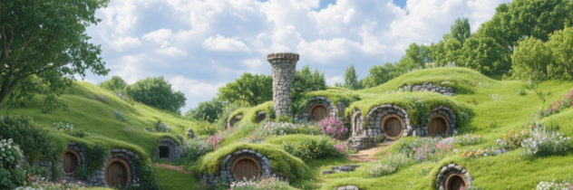

Nossa História

Muito antes do primeiro pão dourar em nosso forno, o Condado já era famoso pelos aromas que saíam
das cozinhas dos hobbits.
Inspirados por essas tradições e carregando um sonho no bolso, viajamos por toda a Terra-Média em busca dos
melhores ingredientes e das receitas mais encantadoras.
Passamos pelas plantações douradas de Rohan para
colher trigo macio, pelas florestas de Lothlórien para provar o mel élfico, e até enfrentamos o frio
das
Montanhas Sombrias para encontrar especiarias raras trazidas pelos anões.
De volta ao nosso aconchegante lar, no ano de 2011 abrimos o nosso forno no coração do Condado.
Desde então, misturando ingredientes, com carinho e com um toque de magia, fazemos pães que abraçam
a
alma, doces que contam histórias e bebidas que aquecem os corações.
Hoje, cada fornada é mais que comida -
é um pedacinho da Terra-Média servido à sua mesa, para que você viva a experiencia de fazer um
viagem de volta a um tempo de fantasia, alegria,
aconchego e tradições preservadas.
Aqui, acreditamos que a vida é feita de momentos
simples, como um café fumegante, um pão quentinho e boas histórias para contar.
Inspirados por essas tradições e carregando um sonho no bolso, viajamos por toda a Terra-Média em busca dos melhores ingredientes e das receitas mais encantadoras.
Passamos pelas plantações douradas de Rohan para colher trigo macio, pelas florestas de Lothlórien para provar o mel élfico, e até enfrentamos o frio das Montanhas Sombrias para encontrar especiarias raras trazidas pelos anões.
De volta ao nosso aconchegante lar, no ano de 2011 abrimos o nosso forno no coração do Condado.
Desde então, misturando ingredientes, com carinho e com um toque de magia, fazemos pães que abraçam a alma, doces que contam histórias e bebidas que aquecem os corações.
Hoje, cada fornada é mais que comida - é um pedacinho da Terra-Média servido à sua mesa, para que você viva a experiencia de fazer um viagem de volta a um tempo de fantasia, alegria, aconchego e tradições preservadas.
Aqui, acreditamos que a vida é feita de momentos simples, como um café fumegante, um pão quentinho e boas histórias para contar.